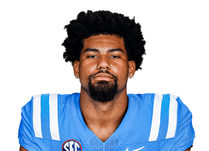

BALL KEEP
Dynasty · Redraft
Player File · WR SF

De'Zhaun Stribling
WR · SF · 23 · Mississippi State
The tape
De'Zhaun Stribling's Ole Miss 2025 reel is a WR with downfield juice, and the 49ers taking him in the range we call late second is a typical Shanahan dart. Our board has him 18th. Pearsall being out until roughly next September (Cold board) is the accidental door. It is also a reminder that San Francisco's WR room is a medical soap opera.
If Stribling wins a camp job, he becomes interesting in a condensed passing game. If he doesn't, he is a practice-squad-shaped name. Superflex can hold one of those. It cannot hold five.
Plus
- Rookie #18 — late second, Ole Miss 2025 reel, 49ers developmental WR.
- San Francisco can turn late WRs into real players; the tape is a downfield threat.
Minus
- Pearsall Cold (long absence) is a path and also a warning about this room's health/role chaos.
- Late-second 49ers WRs are often special-teamers with a nice bio.
Board graph
Spread 101–143 · 18 sources
Every Board
Spread 101–143 · 18 sources
| Source | Rank |
|---|---|
| KeepTradeCut SF | 101 |
| Dynasty Trade Calculator | 114 |
| Dynasty Nerds | 122 |
| Fantasy Footballers | 129 |
| Establish The Run | 129 |
| PlayerProfiler | 129 |
| Rebuild desk | 129 |
| DLF Superflex | 132 |
| Rotoworld | 132 |
| Sleeper Superflex | 132 |
| Underdog ADP | 132 |
| Contender desk | 132 |
| DLF ADP mix | 132 |
| PFF Dynasty | 135 |
| CBS Sports | 135 |
| Fantasy Life | 136 |
| FantasyPros ECR | 141 |
| ESPN (Karabell) | 143 |
Tape · college
De'Zhaun Stribling Highlights | Ole Miss WR | 2025 Season & NFL Draft Scouting Tape
BK News
- ‘Hitting the Panic Button’ — NFL Community Reacts to Concerning Injury Update on 49ers RB Christian McCaffrey
- NFL preseason Week 2 winners and losers: Bo Nix shines in Broncos return, Fernando Mendoza struggles
- 49ers injury updates: De’Zhaun Stribling and Deommodore Lenoir are day-to-day; Jordan James returns
- De’Zhaun Stribling: The 49ers wide receiver both looks—and acts—the part
On The Keep nearby — Quentin Johnston (#120) · Josh Downs (#121) · Eli Stowers (#123) · Courtland Sutton (#124)
All player pages · The Keep · Recent deals · Hot 'n' Cold · BK News